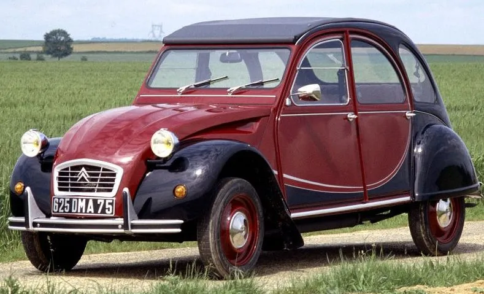
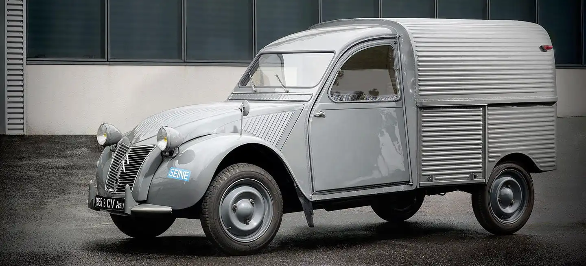
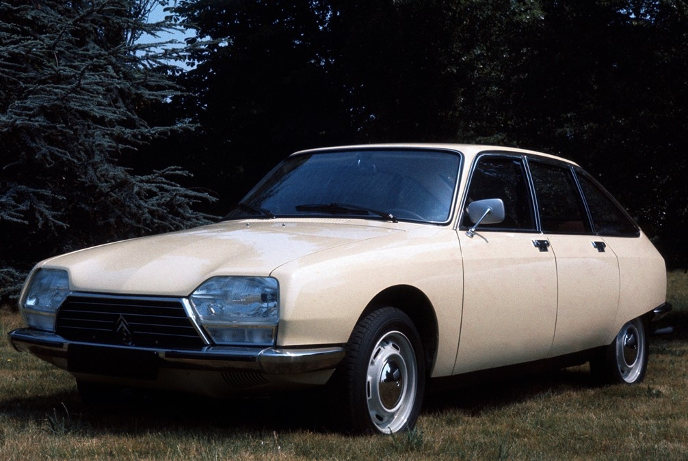
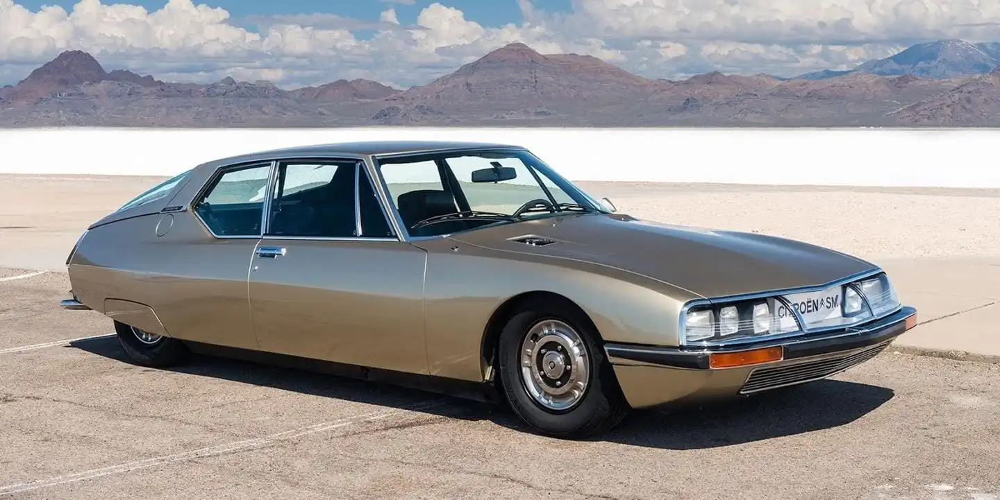
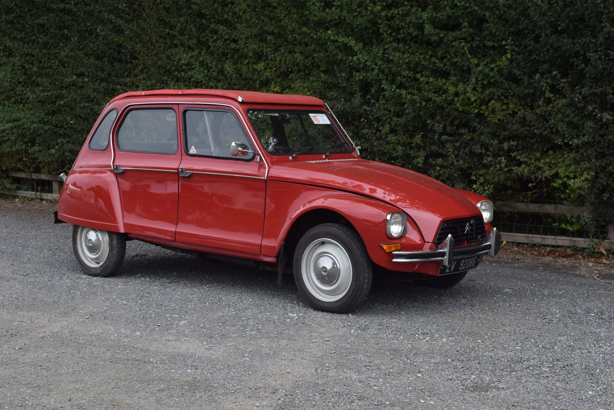
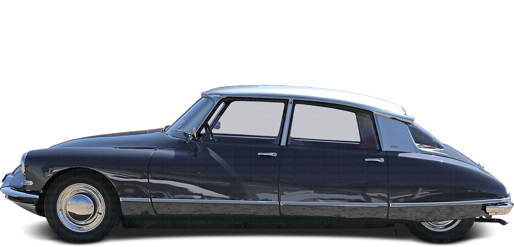

Coche Citroen

Modelo: Citroen 2CV
Caballos de fuerza: 9
Número de marchas: 4
Velocidad Máxima: 65KM/h
Lanzado en el año 1948 que gracias a su gran popularidad vivió hasta el 1990. Pensado para ser práctico y pequeño, contava con un motor de 2 Cilindros en línea, que generaban unos impresionantes 9 caballos de fuerza, con una caja de 3 velocidades más la marcha atrás. Conseguía una velocidad máxima de 65 Km/h con un consumo de 4,5 L a los 100KM.

Modelo: Citroen 2CV
Caballos de fuerza: 9
Número de marchas: 4
Velocidad Máxima: 60KM/h
Gracias al éxito del Citroen 2CV del 1948, Citroen rediseñó el coche tanto estéticamente como mecánicamente hablando, montando el mismo motor que el 2CV original pero ahora alcanzando hasta los 60KM/h, diseñado principalmente para ser un a Furgoneta económica y compacta.

Modelo: Citroen GS
Caballos de fuerza: 55-65
Número de marchas: 5
Velocidad Máxima: 150KM/h
El Citroën GS fue un verdadero hito en la historia de la automoción. Introdujo el sistema de suspensión hidroneumática, que ofrecía un confort excepcional y una gran estabilidad. Contaba con un diseño moderno y aerodinámico, como motor traía un 4 Cilindros bóxer, contaba con una caja de cambios de 4 velocidades o 5 velocidades en modelos posteriores y alcanzaba una velocidad máxima de 150Km/h.

Modelo: Citroen SM
Caballos de fuerza: 170
Número de marchas: 5
Velocidad Máxima: 220KM/h
En 1968 Maserati y Citroen llegaron a un acuerd, creando el Citroen SM. un modelo de alta gama que combinaba lujo y deportividad. Era un gran turismo con un diseño vanguardista; al igual que el Citroen GS contaba con una suspensión hidroneumática con dirección asistida, lo que garantizaba un manejo preciso y confortable el Citroen SM Equipaba un motor V6 de 2.7 litros desarrollado por Maserati capaz de entregar alrededor de 170 caballos de fuerza, contaba con una caja de cambios de 5 velocidades alcanzando los 220 Km/h.

Modelo: Citroen Dyane
Caballos de fuerza: 28-35
Número de marchas: 4
Velocidad Máxima: 115KM/h
El Dyane fue concebido como una evolución del icónico 2CV, pero con un toque más moderno y práctico. Estaba equipado con un motor de cuatro cilindros bóxer, similar al del 2CV, pero con una cilindrada ligeramente mayor dependiendo de la version contaba con 28 o 35 caballos de fuerza(Hp). Este motor ofrecía una potencia suficiente para mover el ligero vehículo con agilidad y economía.Tenía una caja de cambios de 4 velocidades que Conseguía llegar a los 115Km/h.

Modelo: Citroen DS
Caballos de fuerza: 75-141
Número de marchas: 5
Velocidad Máxima: 140-190KM/h
Lanzado en 1955, el DS continuó siendo un referente en innovación y diseño hasta su producción en 1975. En 1970, ya consolidado como un clásico moderno, el DS seguía siendo un automóvil muy avanzado para su época. En 1970, el DS se ofrecía con diversas motorizaciones, principalmente de 4 cilindros en línea que generaban 75 caballos de fuerza con una velocidad máxima de 140km/h, aunque también hubo versiones con motores de 6 cilindros que generaban 141 caballos de fuerza y una velocidad máxima de 190Km/h. Dependiendo del motor que equipase contaba con una caja de cambios de 4 o 5 velocidades que le permitía alcanzar los 180 o 190 Km/h.